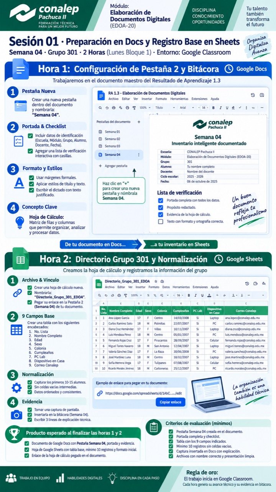
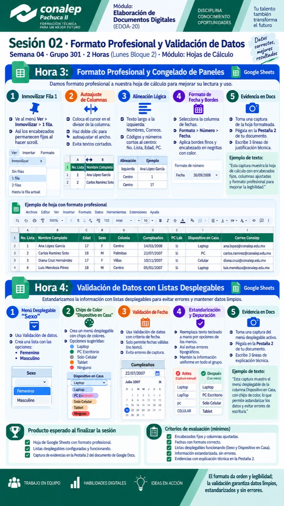

Docs documenta
- Portada y propósito.
- Capturas por hora.
- Explicación breve del avance.
- Reflexión y entrega.
Docs funciona como bitácora de evidencia. Sheets concentra la práctica técnica: tabla, validación, filtros, fórmulas y resumen visual.
Dr. Felipe Lopez Salazar

Esta semana Google Docs funcionará como bitácora de trabajo y Google Sheets como herramienta técnica para organizar información.
La bitácora permite documentar el proceso, guardar evidencias y explicar con claridad qué se hizo, cómo se hizo y qué producto se obtuvo.
Una hoja de cálculo es una herramienta digital organizada en filas y columnas. Su propósito es almacenar, estructurar, calcular y analizar datos mediante fórmulas y funciones automáticas.
La normalización de datos consiste en organizar la información en columnas con propósitos únicos y específicos.
Cuando los datos están normalizados, se reducen duplicidades, errores de captura y problemas al buscar, filtrar o calcular información.
| Producto | Categoría | Cantidad | Precio | Estado | Observación |
|---|---|---|---|---|---|
| Libreta | Escolar | 4 | 45 | Disponible | Cuadro grande |
| Lapicero | Material | 2 | 12 | Bajo | Azul |

El diseño en una hoja de cálculo tiene una función operativa: jerarquizar los encabezados, evitar que se pierdan de vista y asegurar la legibilidad del dato registrado.
El formato no es decoración; permite revisar información de forma más rápida, clara y profesional.
| Producto | Categoría | Cantidad | Precio unitario | Estado |
|---|---|---|---|---|
| Mochila | Escolar | 1 | $380.00 | Disponible |
| USB | Tecnología | 1 | $120.00 | Bajo |
La validación de datos restringe la entrada de información en una celda a valores predeterminados.
Esta función reduce errores tipográficos y permite que las fórmulas, filtros y consultas trabajen con información consistente.
La columna Estado solo acepta opciones controladas.
Filtrar no borra información: solo muestra los datos que cumplen una condición.
Ordenar permite acomodar registros por nombre, cantidad, precio o categoría para analizarlos más rápido.
| Producto | Cantidad | Precio | Estado |
|---|---|---|---|
| Lapicero | 2 | $12.00 | Bajo |
| Cartulina | 0 | $8.00 | Agotado |
En una hoja de cálculo, una fórmula siempre inicia con el signo igual.
Las fórmulas permiten obtener resultados usando referencias de celda, no escribiendo el resultado manualmente.
| Cant. | Precio | Subtotal | Desc. | Total |
|---|---|---|---|---|
| 3 | $20 | =B2*C2 | =D2*10% | =D2-E2 |
| 5 | $12 | =B3*C3 | =D3*10% | =D3-E3 |
Un resumen visual permite interpretar los datos sin revisar toda la tabla.
Sirve para responder rápido: cuántos productos hay, cuánto valen y cuáles requieren atención.
Una práctica técnica se entrega correctamente cuando el archivo funciona y la documentación explica el proceso.
El docente debe poder abrir los enlaces, revisar la hoja y entender la evidencia sin pedir acceso adicional.